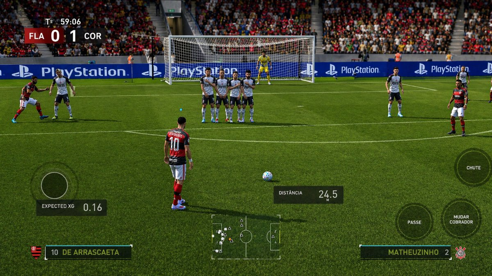
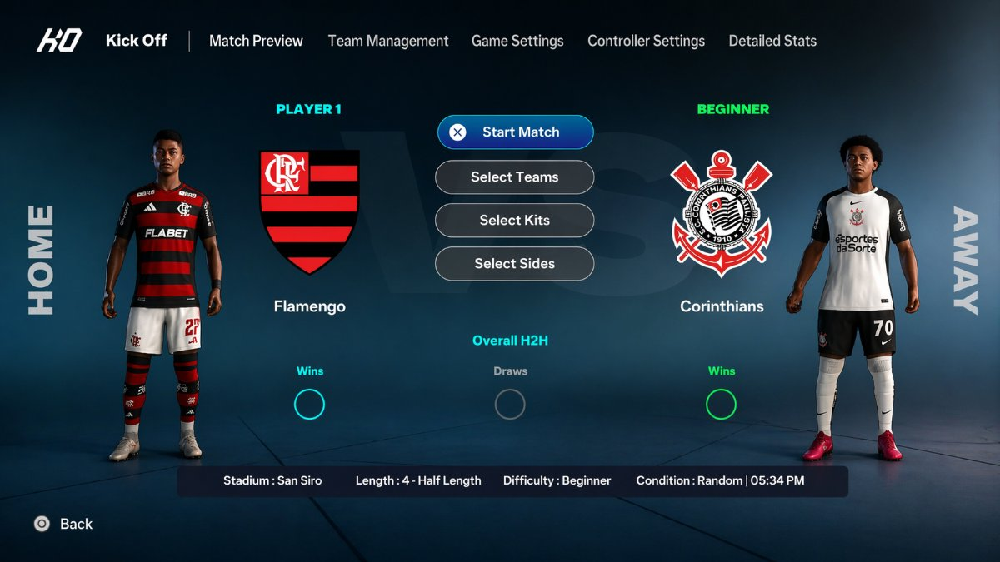
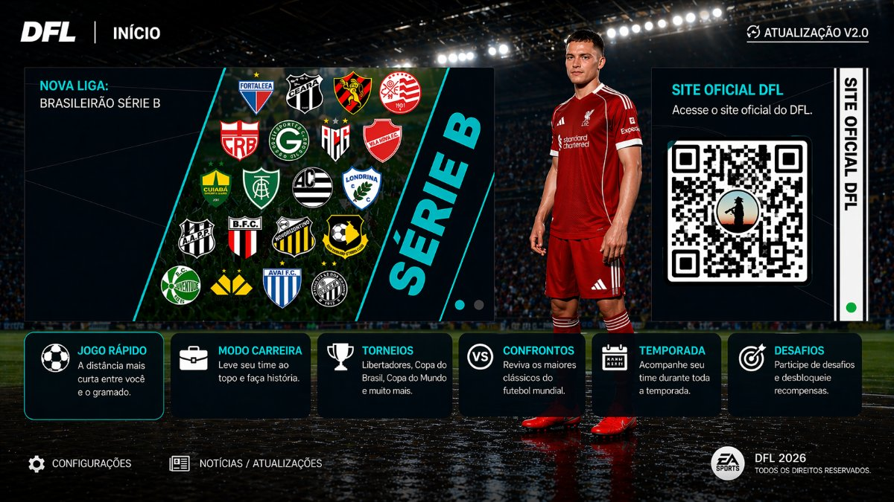
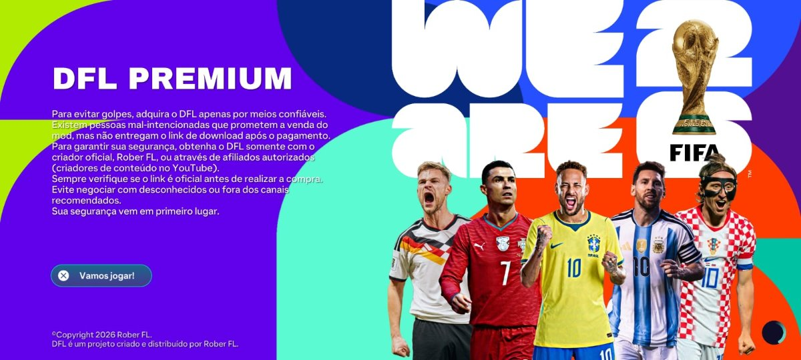
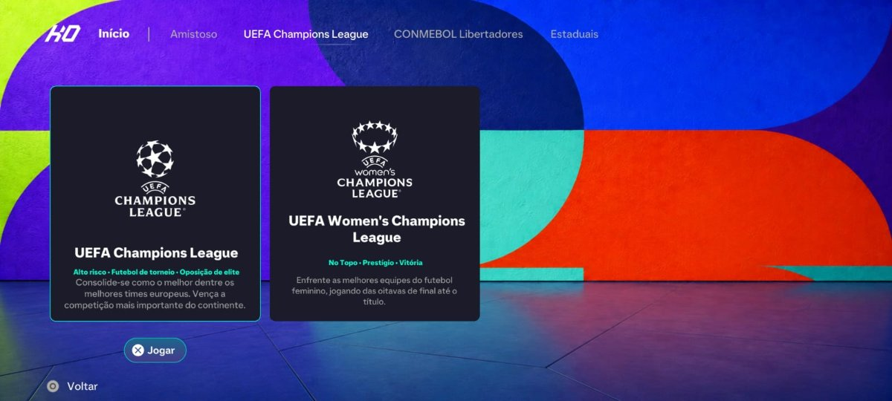
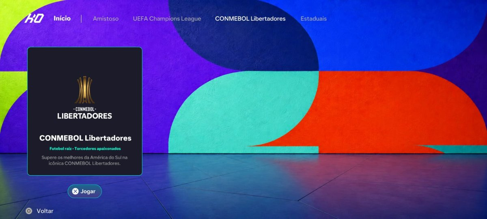
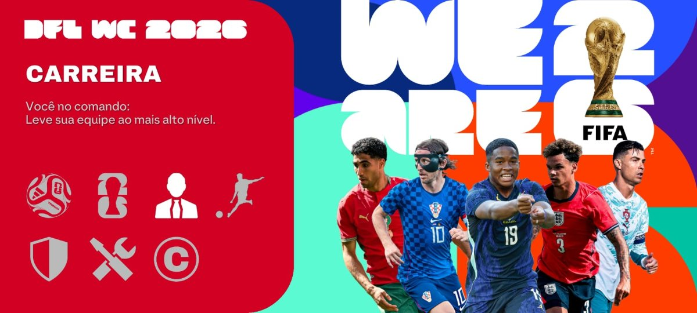
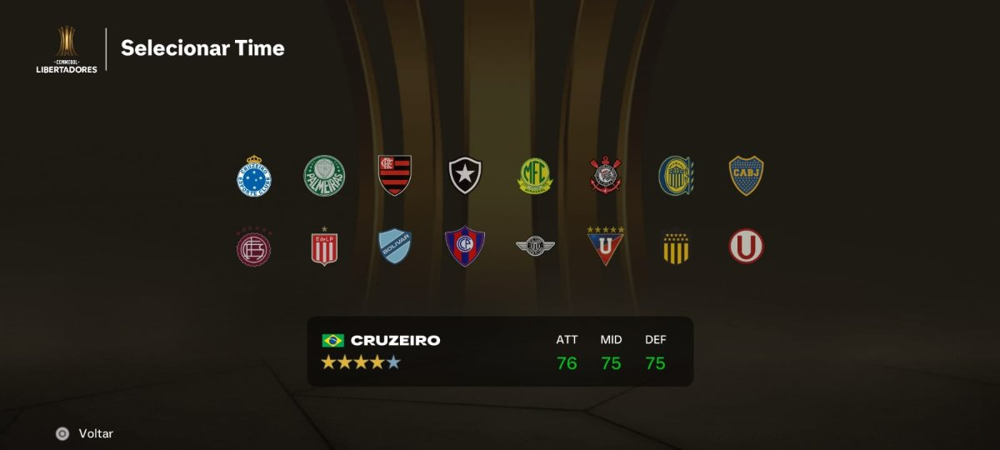
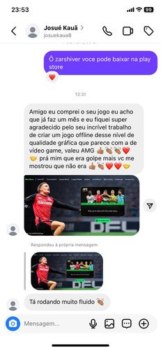
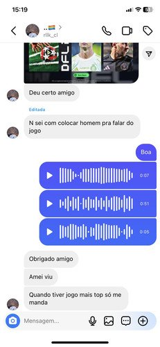

A temporada 2026 inteira
agora cabe no seu bolso.
Jogue no Android com elencos atualizados, novos uniformes, campeonatos, modo carreira e muito mais — em uma versão organizada e pronta para instalar.
Acesso imediato • Tutorial de instalação • Pagamento único
VEJA O JOGO POR DENTRO
Não imagine como ficou. Veja o DFL 26 rodando.
Confira os elencos, menus, uniformes e a experiência da versão atualizada.



TUDO QUE VOCÊ VAI RECEBER
Uma versão completa para você aproveitar a temporada 2026 direto no Android.
Temporada 2026
Times e tabelas atualizados da temporada.
Elencos Atualizados
Jogadores reais com estatísticas recentes.
Download Direto
Sem redirecionamentos, sem enrolação.
Funciona no Android
Compatível com a maioria dos celulares.
Leve e Otimizado
Roda suave mesmo em aparelhos médios.
Acesso Imediato
Receba na hora após a confirmação.
Arquivos Organizados
Tudo pronto para instalar sem erro.
Instalação Simples
Tutorial passo a passo incluso.
Você quer jogar. Não passar horas procurando arquivos.
O QUE VOCÊ PASSA HOJE
- Link fake que trava o celular
- Downloads gigantes com erro no final
- Anúncios infinitos antes de cada clique
- Arquivos quebrados ou desatualizados
COM NOSSO ACESSO PREMIUM
- Link direto via MediaFire ou Drive
- Instalador verificado e seguro
- Sem propagandas irritantes
- Atualizações mensais inclusas
Menos tempo procurando. Mais tempo jogando.
Versão atualizada V4
O futebol muda. Sua versão também precisa acompanhar.
Tenha acesso à versão atualizada e aproveite as novidades sem ficar preso a uma temporada antiga.





QUEM JÁ BAIXOU, APROVOU
Veja o que quem já teve acesso está falando.



ESCOLHA SUA OFERTA
Garanta agora o acesso imediato após a confirmação
PLANO BÁSICO
Ou 2x de R$ 5,45
Pagamento único
- DFL Premium V4 Atualizado
- 🚀 Nova V4 — mais otimizada
- Brasileirão A e B 2026
- Acesso Imediato
- Tutorial de Instalação
PLANO COMPLETO
Ou 2x de R$ 13,45
Pagamento único
- DFL Premium V4 atualizado Gráficos Full HD
- Compatível com Android 12 até Android 16
- 60 FPS para uma jogabilidade mais fluida
- Todas as ligas e campeonatos atualizados
- Copa do Mundo + Champions League
- Uniformes atualizados Bolas atualizadas
- Narração em português
- Acesso Imediato
- Tutorial de Instalação
- Novidades e melhorias futuras incluídas
- Bônus 1 - Bomba Patch 2026
- Bônus 2 - PES 2021
- Atualizações vitalícias
- Suporte Prioritário
- Acesso Vitalício
DÚVIDAS FREQUENTES
NÃO FIQUE PRESO NA TEMPORADA PASSADA
A temporada 2026 já chegou. Tenha sua versão no Android e comece a jogar.
Acesso imediato após a confirmação do pagamento.